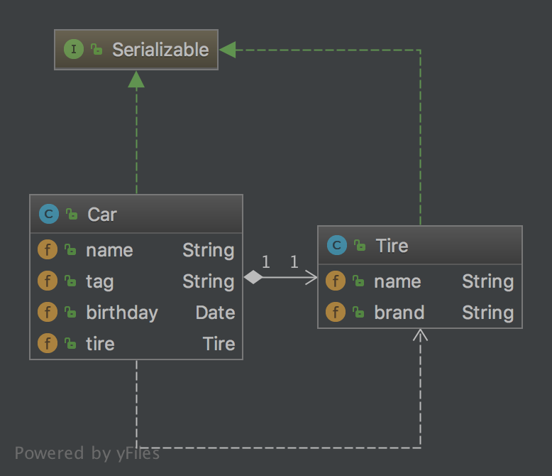

设计模式学习之原型模式
实现方式
一般情况可以通过对象克隆的方式来根据一个对象创建出来多个对象，每个对象在内存占用的内存地址都不一样。在JAVA中克隆又分为浅克隆与深克隆。
浅克隆
JAVA中是按值进行传递。实现克隆的方式就是实现Cloneable接口，这样就可以重写Object对象的clone方法来进行对象的克隆。代码如下：
/**
* Created by tomyli on 2018/5/30.
* Github: https://github.com/peng051410
*/
public class Apple implements Cloneable {
public String name;
public double weight;
@Override
protected Object clone() throws CloneNotSupportedException {
return super.clone();
}
}
测试代码如下：
public static void main(String[] args) throws Exception {
Apple apple = new Apple();
apple.name = "apple";
apple.weight = 2.23;
try {
Apple clone = (Apple)apple.clone();
System.out.println(clone == apple);
} catch (Exception e) {
e.printStackTrace();
}
}
测试代码中clone与apple是两个完全不同的对象，这样就通过apple这个原型创建出来一个全新的对象。但是这里存在一个问题，现在Apple对象中只包含了值类型的成员变量，如果包含了其它对象会克隆也会成功吗？我们在Apple对象中增加一个Stone对象的集合，代码：
public class Apple implements Cloneable {
public String name;
public double weight;
public List<Stone> list; //新增加的对象
@Override
protected Object clone() throws CloneNotSupportedException {
return super.clone();
}
}
这次再使用测试代码进行测试：
public static void main(String[] args) throws Exception {
Apple clone = (Apple)apple.clone();
System.out.println(clone == apple);
System.out.println(clone.list == apple.list);
}
apple与clone依旧不相等，但是clone.list却与apple.list是相同的，这就没有达到我们的目的。在JAVA中对对象的拷贝其实拷贝的是内存地址，所以拷贝后两个list都指定了同一个内存地址。显然，浅克隆对只包含值类型的变量拷贝是正确的，而对包含对象的拷贝的处理是不符合预期的。
深拷贝
深拷贝就是通过对JAVA对象的序列化来进行对象的完整拷贝，主要是通过ObjectInputStream与ObjectOutputStream两个流来实现对象的读取与写入。示例代码：
public class Car implements Serializable {
public String name;
public String tag;
public Date birthday;
public Tire tire;
public Car deepCopy() throws Exception {
ByteArrayOutputStream baos = new ByteArrayOutputStream();
ObjectOutputStream oos = new ObjectOutputStream(baos);
oos.writeObject(this);
ByteArrayInputStream bais = new ByteArrayInputStream(baos.toByteArray());
ObjectInputStream ois = new ObjectInputStream(bais);
Car copy = (Car) ois.readObject();
copy.birthday = new Date();
return copy;
}
}
在上面的代码中要确保每一辆车的出厂日期是唯一的，就要使用深拷贝来实现。要被克隆的对象需要实现Serializable接口。 深拷贝原型模式的类图如下: 
设计模式学习之单例模式
饿汉式
饿汉式单例就是在类定义时就已经将实例进行了初始化，在系统调用时可以直接返回不需要再实例化。示例代码如下：
public class Hungry {
private Hungry() {
}
private static final Hungry INSTANCE = new Hungry();
public static Hungry getInstance() {
return INSTANCE;
}
}
饿汉式的优点是提前进行初始化，线程安全。缺点是在系统未调用的情况下占用了内存空间，是以空间换取时间的样例
懒汉式
懒汉式就是在使用才对对象实例进行初始化，达到了延迟加载的目的。示例代码如下：
public class LazyOne {
private LazyOne() {
}
private static LazyOne instance = null;
public static LazyOne getInstance() {
if (instance == null) {
instance = new LazyOne();
}
return instance;
}
}
懒式式优化点使用时实例化，延迟加载。缺点是存在线程安全问题
懒汉式（线程安全版本）
上面的写法存在线程安全问题，最简单的修改方法是加上synchronized关键字，这样就解决了线程的安全问题。示例代码如下：
public class LazyTwo {
private LazyTwo() {
}
private static LazyTwo instance = null;
public static synchronized LazyTwo getInstance() {
if (instance == null) {
instance = new LazyTwo();
}
return instance;
}
}
加了synchronized关键字解决了线程安全问题，但是程序的并发性能下降，因为在同一时间只能有一个线程进行工作。测试生成200万个实例的情况，不带关键字synchronized耗时7ms，而带synchroized的耗时49ms，相差7倍，加大生成实例的个数，这个时间差会更大，这个版本性能的测试代码如下：
long start = System.currentTimeMillis();
int count = 2_000_000;
for (int i = 0; i < count; i++) {
LazyOne.getInstance();
}
System.out.println("LazyOne use: " + (System.currentTimeMillis() - start) + "ms");
long start2 = System.currentTimeMillis();
for (int i = 0; i < count; i++) {
LazyTwo.getInstance();
}
System.out.println("LazyTwo use: " + (System.currentTimeMillis() - start2) + "ms");
注册式单例
注册式单例是Spring中使用的一种产生单例的方式，主要的思想就是将要产生的单例对象使用一样map进行存储。示例代码如下：
private final static Map<String, Object> singletonMaps = new ConcurrentHashMap<>();
public static Object getBean(String beanName) {
if (null == beanName || "".equals(beanName)) {
throw new RuntimeException("invalid beanName");
}
if (!singletonMaps.containsKey(beanName)) {
try {
synchronized (singletonMaps) {
Object o = Class.forName(beanName).newInstance();
singletonMaps.put(beanName, o);
return o;
}
} catch (Exception e) {
e.printStackTrace();
}
}
return singletonMaps.get(beanName);
}
Spring实际的生成单例bean的处理方式比这复杂很多。
静态内部类方式
静态内部类就是在一个类的内部又声明了一个类，静态内部类生成单例的代码如下：
public class LazyThree {
private LazyThree() {
}
public static LazyThree getInstance() {
return InstanceHolder.LAZY;
}
private static class InstanceHolder {
private static final LazyThree LAZY = new LazyThree();
}
}
在类LazyThree的内部又声明了一个名为InstanceHolder的静态内部类，刚开始外部类初始化时内部类不会进行初始化，这样保留了懒加载的特性，只有在调用getInstance方法时内部类才初始化，JVM虚拟机内部的逻辑保证了在多线程情况静态内部类只给被初始化一次，这样也保证了线程的安全。但是JAVA提供我们程序员太多的方式来进行类的实例化，比如clone，反射，序列化。在这些情况下，我们的单例还是唯一的吗？
打破单例之Clone方式
在JAVA中所有对象都继承Object对象，实例对象实现Cloneable接口则可以进行clone，示例代码如下：
@Override
public Object clone() throws CloneNotSupportedException {
return super.clone();
}
测试代码:
LazyThree lazyThree = LazyThree.getInstance();
LazyThree clone = (LazyThree) lazyThree.clone();
System.out.println(lazyThree == clone); //结果为false
打破单例之反射方式
反射是JAVA的一个利器，利用反射可以实例化对象，调用方法，动态的创建对象，使用反射创建实例的代码如下：
Constructor<LazyThree> constructor = LazyThree.class.getDeclaredConstructor(null);
constructor.setAccessible(true);
LazyThree lazyThreeReflect = constructor.newInstance(null);
LazyThree lazyThree = LazyThree.getInstance();
System.out.println(lazyThree == lazyThreeReflect);
生成的实例不是相同的，虽然我们的类已经把构造方法声明为了private，但是反射依然可以访问的到。
解决反射产生单例不一致的问题
为了防止这种事情的发生，我们需要在构造方法上对类初始化状态进行标识来阻止类的多次初始化。代码如下：
private static boolean initial = false;
private LazyThree() {
synchronized (LazyThree.class) {
if (!initial) {
initial = true;
} else {
throw new RuntimeException("单例被侵犯");
}
}
}
我们定义的一个静态变量initial来标识类有没有进行了初始化，并且不对外提供对initial变量的get与set方法。这样如实例已经初始化了，再次调用则抛出异常表明类已经被初始化了，这样就防止了使用反射方式来进行类的实例化了。
打破单例之序列化反序列化
JAVA中的对象是可以持久化到磁盘上的，使用的方式就是序列化与反序列化，主要是使用ObjectInputStream与ObjectOutPutStream来实现。代码如下：
LazyThree lazyThree = LazyThree.getInstance();
File file = new File(LazyTest.class.getResource("").getPath() + "/serializable.txt");
FileOutputStream fps = new FileOutputStream(file);
ObjectOutputStream oos = new ObjectOutputStream(fps);
oos.writeObject(lazyThree);
oos.flush();
oos.close();
FileInputStream fis = new FileInputStream(file);
ObjectInputStream ois = new ObjectInputStream(fis);
LazyThree lazyThreeSerializable = (LazyThree) ois.readObject();
fis.close();
ois.close();
System.out.println(lazyThree == lazyThreeSerializable);
上面代码的结果为false，证明两个对象不相同

总结
写一个单例不容易。 以下是完整的单例方式代码:
package cn.imcompany.lazy;
import java.io.Serializable;
/**
* Created by tomyli on 2018/6/2.
* Github: https://github.com/peng051410
*/
public class LazyThree implements Cloneable, Serializable {
private static boolean initial = false;
private LazyThree() {
synchronized (LazyThree.class) {
if (!initial) {
initial = true;
} else {
throw new RuntimeException("单例被侵犯");
}
}
}
public static LazyThree getInstance() {
return InstanceHolder.LAZY;
}
private static class InstanceHolder {
private static final LazyThree LAZY = new LazyThree();
}
private Object readResolve() {
return getInstance();
}
// public static boolean isInintial() {
// return inintial;
// }
//
// public static void setInintial(boolean inintial) {
// LazyThree.inintial = inintial;
// }
@Override
public Object clone() throws CloneNotSupportedException {
return getInstance();
}
}
Idea中vim键的映射
Idea中IdeaVim插件可以让我们在Idea中使用vi的按键来进行操作，但是原生的配置只带有一些基本的移动操作。需要在~/.ideavimrc文件中进行Idea的动作映射来发挥它们的最大力量。
| Key | Description |
|---|---|
| kj | <Esc> |
| gt | VimBack |
| gT | VimForward |
| gd | GotoDeclaration<cr> |
| gf | GotoTypeDeclaration<cr> |
| gh | QuickJavaDoc<CR> |
| gs | GotoSymbol<cr> |
| gi | GotoImplementation<CR> |
| gu | FindUsages<CR> |
| gj | IntroduceVariable<CR> |
| leader w d | ActivateDatabaseToolWindow |
| leader ' | ActivateTerminalToolWindow |
| leader w r | ActivateRedisServersToolWindow |
| leader w m | ActivateMavenProjectsToolWindow |
| leader w a | HideActiveWindow |
| leader w w | HideAllWindows |
| leader w p | ActivateProjectToolWindow<CR> |
| leader w s | ActivateStructureToolWindow<CR> |
| leader w v | ActivateVersionControlToolWindow<CR> |
| leader w h | <c-w>h Go to left window |
| leader w l | <c-w>l Go to right window |
| leader w k | <c-w>k Go to window up |
| leader w j | <c-w>j Go to window down |
| leader w V | <c-w>v Split Window Vertically |
| leader w - | <c-w>s Split Winodw Horizontally |
| leader w c | <c-w>c Close current window |
| leader w o | <c-w>o Close all window except current |
| leader <Space> | GotoAction<CR> |
| leader c c | GotoClass<CR> |
| leader c r | CopyReference<CR> |
| leader c p | CopyPaths<CR> |
| leader f f | GotoFile<CR> |
| leader f d | DashLauncherAction<CR> |
| leader b b | RecentFiles<CR> |
| leader b p | FileStructurePopup<cr> |
| leader b u | ReopenClosedTab<CR> |
| leader d d | Debug<CR> |
| leader d D | DebugClass<CR> |
| leader d j | JRebel |
| leader l l | EvaluateExpression<CR> |
| leader t t | ToggleLineBreakpoint<CR> |
| leader r r | Run<CR> |
| leader r R | RunClass<CR> |
| leader i m | ImplementMethods<CR> |
| leader e e | ShowErrorDescription<cr> |
| leader e n | GotoNextError<cr> |
| leader R | :source ~/.ideavimrc |
| leader g s | Vcs.QuickListPopupAction |
| leader r p | ReplaceInPath |
| zO | ExpandAllRegions<CR> |
| zo | ExpandRegion<CR> |
| zc | CollapseRegion<CR> |
| zC | CollapseAllRegions<CR> |
| fj | emacsIDEAs.AceJump<CR> |
| fw | emacsIDEAs.AceJumpWord<CR> |
| ff | CommentByLineComment<CR> |
| fb | CommentByBlockComment<CR> |
| gd | GotoDeclaration<cr> |
| gf | GotoTypeDeclaration<cr> |
| gh | QuickJavaDoc<CR> |
| gs | GotoSymbol<cr> |
| gi | GotoImplementation<CR> |
| gu | FindUsages<CR> |
| gj | IntroduceVariable<CR> |
| ,, | ReformatCode<CR> |
| ,r | RenameElement<CR>i |
| <c-o> | Back<cr> |
| <c-i> | Forward<cr> |
| leader R | reload ~/.ideavimrc<CR> |
| leader a l | :actionlist<CR> |
| leader g s | Vcs.QuickListPopupAction<CR> |
| leader s p | FindInPath<CR> |
| leader r p | ReplaceInPath<CR> |
| , c r | Revert change |
| , c t | Close other tab |